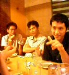

|

| >
Drinking, Talking, Never Thinking... 専攻同期飲み会とか。写ってンの左からヨネ、ハヤ、シゲかな。話題つったら、「で、どうなのよ、成田は、スッチーは」『だから、貨物は男ばっかなんだって』「なに〜、、じゃ、どうなのよ、寮が同じマンションてのは」『だから、階は違うんだって』「なに〜、、（つづく）」
>
今日は永田町でSAS InstituteのJMP ver5のセミナーでした。開発者とか話し来てて。ver4は、MS Excelと並んで、つかわない日はないくらいだしさ。
|
DATE: 02-09-12 20:39
PLACE: 東京都台東区
|
|